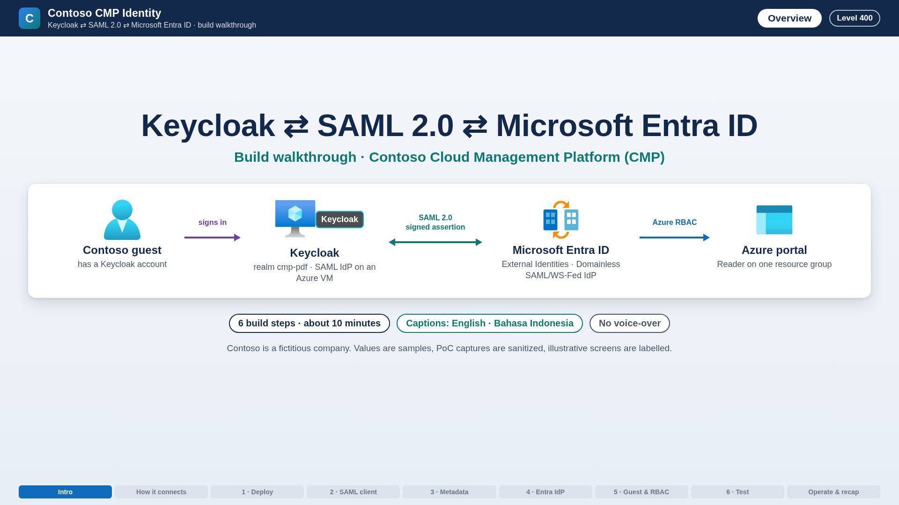

Keycloak and Microsoft Entra ID federation for Contoso CMP
An L400 guide to how Contoso's Cloud Management Platform signs people in with Keycloak, and how a SAML 2.0 trust lets Microsoft Entra ID admit them to Azure as B2B guests.
Contoso's Cloud Management Platform (CMP) uses Keycloak as its primary identity provider. A separate SAML 2.0 trust lets Microsoft Entra ID accept Keycloak-authenticated people as B2B guests, so that the Azure portal, Conditional Access, MFA and Azure RBAC stay under Entra's control. This site explains the protocols in depth, shows how the two trusts connect, and walks through every build step with the actual scripts and a screenshot for each guide.


▶ Video walkthrough · 10 minutesThe six build steps on screen, from Keycloak on Azure to the Domainless SAML identity provider in Entra ID and the end-to-end test. Captions in English and Bahasa Indonesia, with chapters.What is proven today#
This guide is built from a proof of concept (PoC) deployed in Azure Indonesia Central. The table separates what was observed from what is still open. Nothing on this site claims more than the evidence supports.
| Capability | Status | Evidence / where |
|---|---|---|
Keycloak 26.x on an Ubuntu 24.04 VM, HTTPS through Caddy, realm cmp-pdf; public admin paths return 404 | Proven | G1 · HTTPS discovery, SAML metadata and closed paths checked by deploy-sso.ps1 -Phase Verify |
| CMP → Keycloak sign-in (OIDC authorization code + PKCE, state, nonce) with a local Keycloak user | Proven | G7 / G8 · first-password change, then authenticated CMP callback |
Keycloak SAML client for Entra (tenant audience, login.srf ACS, persistent NameID, email claim, signed response + assertion) | Configured, not end-to-end | G2 · configured and read back through the Keycloak Admin REST API |
| Entra Domainless SAML/WS-Fed identity provider pointing at the Keycloak realm | Configured, not end-to-end | G4 · saved and read back in the Entra admin center |
| B2B guest object and Azure RBAC Reader on one resource group | Configured, not end-to-end | G5 · created and read back; invitation still PendingAcceptance |
| Guest redemption through Keycloak, Azure portal sign-in, MFA behaviour | Not yet proven | G8 · test plan and capture method; backlog |
Saving the Entra federation, enabling a CMP destination or creating a guest does not prove Azure portal SSO. Microsoft Entra still applies first-use consent, mandatory MFA for the Azure portal and Conditional Access to guests (Microsoft Learn: mandatory MFA). Treat every 'configured' row as a prerequisite, not a result.
How to read this site#
Contoso sample values#
All identifiers on this site are Contoso samples. The PoC's real tenant, subscription, host names and people were replaced in text, scripts and screenshots. Use your own values when you run the scripts.
| Item | Sample value used on this site |
|---|---|
| Company / Entra tenant | Contoso · primary domain contoso.com |
| Tenant ID | aaaabbbb-0000-cccc-1111-dddd2222eeee |
| Subscription ID | aaaa0a0a-bb1b-cc2c-dd3d-eeeeee4e4e4e |
| Keycloak public origin | https://sso.contoso.com (PoC used the VM's Azure DNS label — see G1) |
| Keycloak realm / issuer | cmp-pdf · https://sso.contoso.com/realms/cmp-pdf |
| CMP frontend / admin | https://cmp.contoso.com · https://cmp-admin.contoso.com |
| Entra SAML audience (Keycloak client ID) | https://login.microsoftonline.com/aaaabbbb-0000-cccc-1111-dddd2222eeee/ |
| Assertion Consumer Service (ACS) | https://login.microsoftonline.com/login.srf |
| External test user | megan.bowen@example.org (guest object 00aa00aa-bb11-cc22-dd33-44ee44ee44ee) |
| Region / resource group | Indonesia Central · rg-cmp-sso-indonesia-poc |
Figure and source conventions#
| Marker | Meaning |
|---|---|
| PoC capture · sanitized | A real browser capture from the PoC. Identifiers replaced; nothing else edited. |
| Illustrative · rendered | Rendered from the scripts and configuration in this repository (console output shape, a recreated admin screen, an expected SAML message). Not a capture of a live system. |
| Diagram | Architecture or sequence diagram. Azure services use the official Azure Architecture Icons, labelled with the product name. |
| Microsoft Learn link | Source for a Microsoft platform statement. |
| Keycloak docs link | Source for Keycloak behaviour. |
| PoC item | Behaviour that is undocumented or not yet demonstrated. Validate it before relying on it. |
Who this is for#
Level 400: identity architects, Azure platform engineers and security reviewers who already know OAuth 2.0/OIDC, X.509 and Azure networking. Guides assume PowerShell 7, Azure CLI with Bicep, Node.js 24, and the Entra roles named in each step.